[6-3] TIM输出比较 — 学习笔记
- 本集定位：这是定时器大节第二部分（输出比较/PWM）的纯理论课——片头 00:26–02:59 演示三个已经写好的工程的现象（
6-3 PWM驱动LED呼吸灯、6-4 PWM驱动舵机、6-5 PWM驱动直流电机），02:59 起直接切 PPT，之后 41 分钟全是原理、结构图、模式表、公式、器件与接线，没有新建工程、没有写一行代码、也没有讲TIM_OCInit这类库函数。片尾原话是「我们下一小节再来学习一下 PWM 的代码部分」，所以三个程序的代码在 P16 [6-4]。
一句话结论
输出比较（OC = Output Compare）就是拿计数器的值 CNT 和每个通道的比较值 CCR 比大小，再按设定的规则决定输出电平——所以它天生适合输出 PWM：时基单元让 CNT 在 0～ARR 之间循环自增，4 个通道各有自己的 CCR，输出模式控制器比较 CNT 与 CCR，PWM模式1 + 向上计数时「CNT<CCR 置有效电平、CNT≥CCR 置无效电平」，得到的 OCxREF 再经极性选择（CC1P）、输出使能（CC1E）送到引脚；8 种输出模式里真正实用的就一种，其余七种（冻结、匹配时置有效/置无效、匹配时电平翻转、强制无效/有效、PWM模式2）只用了解。三个参数一次记牢：Freq = CK_PSC/(PSC+1)/(ARR+1)（PWM 频率 = 计数器更新频率）、Duty = CCR/(ARR+1)、Reso = 1/(ARR+1)（本书定义的分辨率是占空比最小变化步距，越小越好）——ARR=99、CCR=30 时一个周期是 0～99 共 100 个数，CNT 等于 30 的瞬间已经跳低，高电平只有 0～29 共 30 个数，所以占空比是 30/100=30%，分辨率 1%。PWM 能在数字系统里等效输出模拟量，靠的是「惯性系统 + 唯快不破」：LED 余晖/人眼视觉暂留、电机转动惯性，让足够快的高频通断看起来像连续的中等亮度/中等转速，5V 系统 50% 占空比等效 2.5V、20% 等效 1V，频率一般几 K～几十 KHz、分辨率 1% 通常够用。外部器件两条线：舵机把 PWM 当通信协议用（周期固定 20ms，高电平 0.5～2.5ms 线性对应 180° 舵机的 -90°～+90°，给多少脉宽就停在哪个角度）；直流电机是大功率器件、GPIO 不能直接驱动，要用 TB6612 双路 H 桥——IN1/IN2 定方向、PWM 定速度（PWM 高才转、低就停，频率够快就是连续转、占空比决定快慢），STBY 是待机脚，VM 接电机电源（4.5～10V）、VCC 接逻辑电源（2.7～5.5V）。本集纯理论、没有讲代码，代码在 P16 [6-4]。
0. 本集定位：理论课，代码在下一集
- 本集是定时器大节第二部分「输出比较」的理论集，主题一句话：STM32 内部是怎么产生 PWM 波形的，以及能用 PWM 控制哪些外部器件、怎么接线。
- 片头 3 分钟只有「现象」，没有「代码」：00:26「好，那我们先来看一下本小节程序的现象」，随后 00:43 / 01:21 / 02:03 依次演示 3 个程序的效果；画面里 Keil 只是开着已建好的工程（标题栏分别是
6-3 PWM驱动LED呼吸灯、6-4 PWM驱动舵机、6-5 PWM驱动直流电机），讲解全是「按一下按键、角度变化、OLED 显示多少」，没有任何新建工程、写代码、讲函数的镜头（图 1/2/3 的 Keil 代码区在本分辨率下也看不清，本笔记不当资料用）。 - 02:59「好，接下来我们就来看一下 PPT」起，之后 41 分钟全是 PPT 与参考手册：输出比较简介 → PWM 简介 → 图125 通用定时器输出比较通道电路 → 8 种输出模式表 → PWM 基本结构 → 参数计算 → 高级定时器通道（图78）→ 舵机简介 → 舵机硬件电路 → 直流电机与驱动简介 → TB6612 硬件电路与真值表 → 参考手册导读。
- 片尾明确预告代码在下一集：44:16「我们下一小节再来学习一下 PWM 的代码部分」；25:21 还留了一道练习题（输出 1kHz、占空比任意可调、分辨率 1% 的 PWM），说「大家可以先想一想，我们下一小节就会来实际操作一下」。
- 所以本笔记不写配置步骤：
TIM_OCInit、TIM_OCStructInit、TIM_OCMode_PWM1、TIM_SetCompare1这些库函数本集没有出现，属于 P16 [6-4] 的内容。片头的三个程序（呼吸灯/舵机/电机）在本集里只作为「这一节要解决什么问题」的引子。
1. 片头三个现象：这一节要解决什么
本小节共有 3 个程序：① PWM 驱动 LED 呼吸灯、② PWM 驱动舵机、③ PWM 驱动直流电机。动机在开场就说了：「PWM 波形又是驱动电机的必要条件」，所以想做智能车、机器人这类带电机的项目，输出比较功能就要好好学（00:14）。
1.1 现象①：PWM 驱动 LED 呼吸灯（00:43–01:21）
- 面包板上在 PA0 端口上接了一个 LED。
- 老师抛出的问题：GPIO 口是一个数字输出的端口，输出的电平不是高电平就是低电平，按理说 LED 只有「完全亮」和「完全灭」两种状态，怎么能实现 LED 连续地调控亮度呢？
- 答案就是 PWM 的功劳（本集第 3 章讲原理）：让 LED 不断地点亮、熄灭，只要频率足够快，就看不到闪烁，而是呈现出一个中等亮度；再调亮点亮与熄灭的时间比例，就能得到不同的亮度级别。
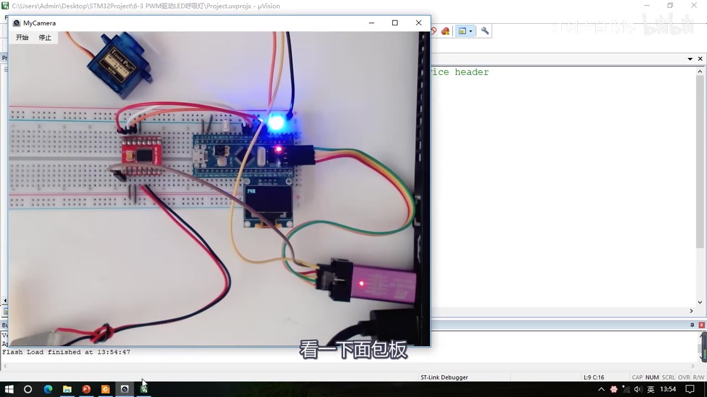
图 1：现象① LED 呼吸灯——面包板上 STM32 最小系统板，PA0 上接的 LED 亮着；Keil 标题栏是 STM32Project\6-3 PWM驱动LED呼吸灯（现成工程，本集不写代码）
1.2 现象②：PWM 驱动舵机（01:21–02:03）
- 拿一个舵机，按一下按键，可以看到舵机输出轴的角度在不断变换，OLED 上也显示了当前的角度（画面是
Angle:060）。 - 每按一下，角度变量就变一次，舵机也随即跟随变化到指定的角度，然后固定下来。
- 「当然这个角度你可以任意设置」，演示里只是用按键简单地修改。
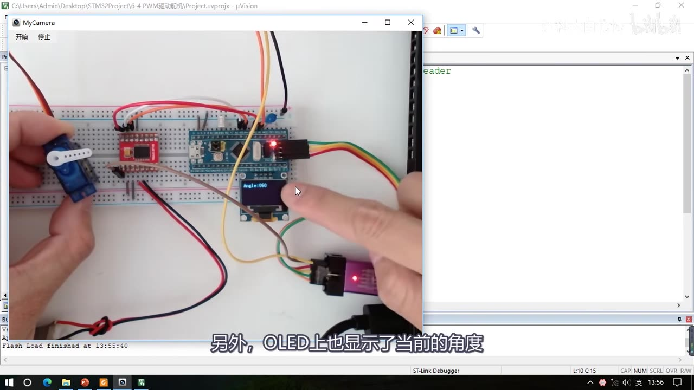
图 2：现象② 舵机——按键修改角度，舵机输出轴转到指定角度固定，OLED 显示 Angle:060；Keil 标题栏 6-4 PWM驱动舵机
1.3 现象③：PWM 驱动直流电机（02:03–02:59）
- 电机转起来，OLED 上显示的是当前的速度值，一开始是
Speed:+20。 - 然后一直按：+20 → +40 → +80 → +100（正向满速）；再按一下，速度由 +100 变为 -100，电机立刻变为反向满速旋转；继续按就是 -80、-60、-40、-20，然后回到 0，电机停止。
- 结论：可以任意地控制电机旋转的方向和速度（速度值也可以按程序任意更改，演示写得比较简单）。
- 三个现象共同指向一个问题：GPIO 只有高低两种状态，怎么做出「连续变化」的效果——这就是 PWM，也就是本集要讲的输出比较功能。
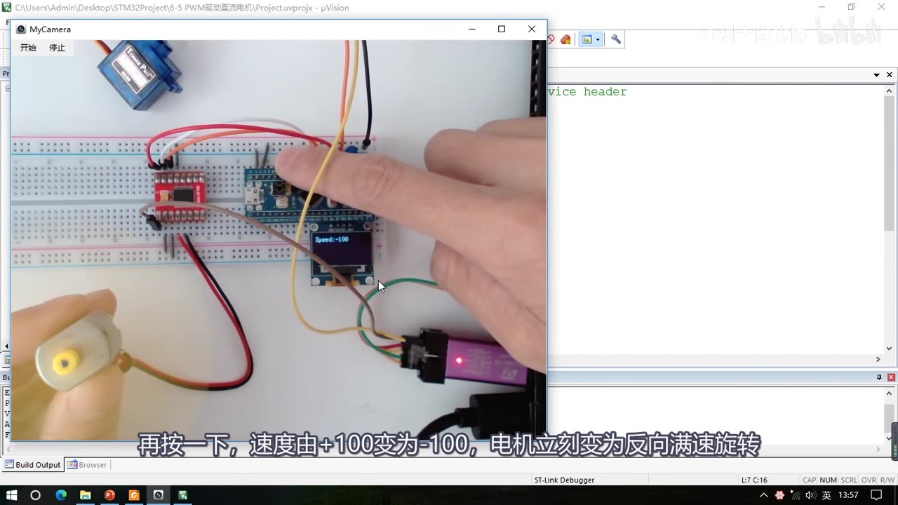
图 3：现象③ 直流电机——OLED 显示 Speed:-100，电机反向满速；Keil 标题栏 6-5 PWM驱动直流电机
2. 输出比较是什么
2.1 三个英文缩写：OC / IC / CC
- OC = Output Compare，输出比较，直译就是「输出比较」。
- IC = Input Capture，输入捕获（后面的大节会讲）。
- CC = Capture/Compare，捕获/比较，一般表示输入捕获和输出比较的单元。由此 CCR 就是 Capture/Compare Register，捕获/比较寄存器（R = Register）。
- 为什么要专门讲缩写：在库函数里经常出现这些英文缩写，不然写个 OC 你不知道是啥意思。
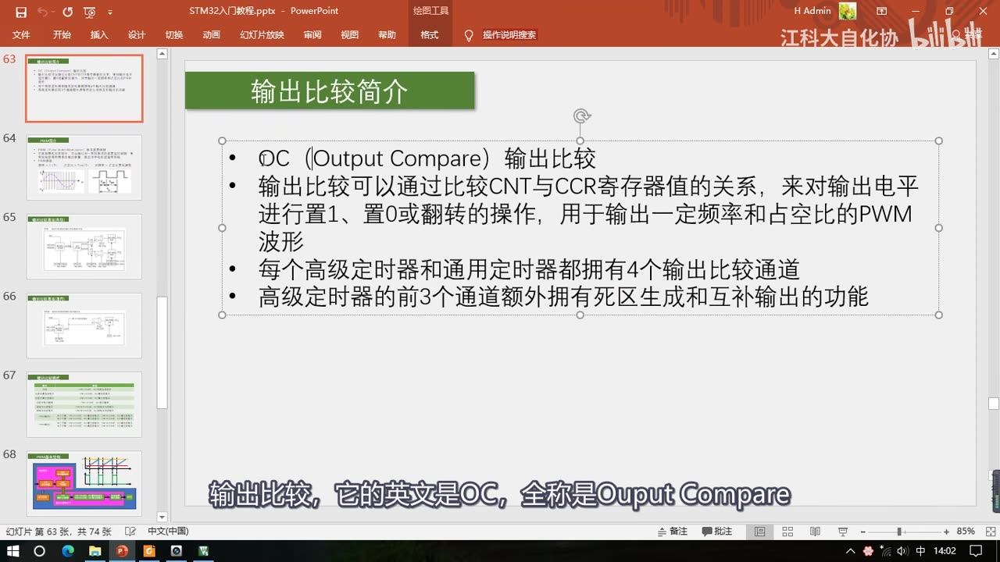
图 4：PPT「输出比较简介」——OC（Output Compare）输出比较；输出比较通过比较 CNT 与 CCR 寄存器值的关系，对输出电平置1/置0/翻转，输出一定频率和占空比的 PWM 波形；每个高级/通用定时器都有 4 个输出比较通道；高级定时器前 3 个通道额外有死区生成和互补输出
2.2 核心功能：比较 CNT 与 CCR，输出 PWM
- 「输出比较可以通过比较 CNT 与 CCR 寄存器值的关系，来对输出电平进行置 1、置 0 或翻转的操作，用于输出一定频率和占空比的 PWM 波形。」——这是输出比较模块最主要的功能。
- CNT 和 CCR 在哪：在通用定时器的结构图里，CNT 就是时基单元里面的计数器，CCR 就是捕获/比较寄存器（图里写作「捕获/比较寄存器」）。这个寄存器是输入捕获和输出比较共用的：用输入捕获时它是捕获寄存器，用输出比较时它是比较寄存器。
- 工作机制：这块电路会比较 CNT 和 CCR——CNT 计数自增，CCR 是我们给定的一个值；当 CNT 大于 CCR、小于 CCR 或等于 CCR 时，输出就对应地置 1、置 0、置 1、置 0，这样就能输出一个电平不断跳变的 PWM 波形。这就是输出比较的基本功能。
2.3 4 个通道、一个 CNT、基本定时器没有
- 每个高级定时器和通用定时器都拥有 4 个输出比较通道，可以同时输出 4 路 PWM 波形。
- 这 4 个通道有各自的 CCR 寄存器，但是它们共用一个 CNT 计数器——因为 CNT 属于时基单元，整个定时器只有一个，而比较值是每个通道独立的。
- 基本定时器（TIM6/TIM7）没有输出比较功能：从结构图上就看得出来，所以本小节的功能不能在基本定时器上使用。（F103C8T6 本来也没有基本定时器——这条是 [6-1] 讲过的背景。）
- 高级定时器的前 3 个输出比较通道，还额外具有「死区生成」和「互补输出」的功能，这个是用于驱动三相无刷电机的，本课程暂时不作为重点内容——本课程主要学通用定时器的输出比较（第 8 章会简单提一下高级定时器的结构，仅作了解）。
3. PWM 简介
3.1 PWM 是什么：数字信号 + 惯性系统
- PWM = Pulse Width Modulation，脉冲宽度调制（画面与口述都强调这个全称）。
- PWM 波形是一个数字输出信号，也是由高低电平组成的——就是图里那样「低、高、低、高、低」连续变化的电平信号。
- 它的用处：「在具有惯性的系统中，可以通过对一系列脉冲的宽度进行调制，来等效地获得所需要的模拟参量，常应用于电机控速等领域。」
- 为什么必须具有惯性（08:23 起专门解释）：
- LED：熄灭的时候，由于余晖和人眼视觉暂留现象，LED 不会立马熄灭，而是有一定的惯性，过一小段时间才熄灭；
- 电机：当电机断电时，电机的转动不会立马停止，而是有一定的惯性，过一会才停；
- 这样具有惯性的系统，才能使用 PWM。
- 应用举例：让 LED 不断点亮、熄灭，频率足够大时 LED 不会闪烁、而是呈现中等亮度；调控点亮和熄灭的时间比例，就能得到不同的亮度级别。电机调速同理：以很快的频率给电机通电、断电，电机的速度就能维持在一个中等速度。老师总结：「PWM 的秘诀就是，天下武功，唯快不破」——只要闪得足够快，你就发现不了它到底是闪着亮的还是正常亮度。
3.2 三个参数：频率、占空比、分辨率
| 参数 | 定义（画面原文） | 含义 |
|---|---|---|
| 频率 | 频率 = 1 / T_S |
T_S 是一个高低电平变换周期的时间，也就是一个完整周期；周期取倒数就是频率 |
| 占空比 | 占空比 = T_ON / T_S |
T_ON 是高电平的时间，T_ON/T_S 就是高电平时间相对于整个周期时间的比例，一般用百分比表示 |
| 分辨率 | 分辨率 = 占空比变化步距 |
占空比变化的最小步距，比如只能 1%、2%、3% 跳变就是 1% 分辨率 |
- 占空比的几个极端值：50% 就是高低电平时间相等的方波；20% 就是高电平占 20%、低电平占 80%；100% 就直接是高电平不带变的；0% 就直接是低电平。
- 占空比决定等效出来的模拟电压大小：占空比越小，等效的模拟电压就越趋近于低电平；这个等效关系一般来说是线性的——高电平 5V、低电平 0V 时，50% 占空比等效于中间电压 2.5V，20% 占空比等效于 1/5 处的电压 1V。
- 频率：PWM 频率越快，等效模拟的信号就越平稳，不过同时性能开销就越大；一般来说 PWM 的频率都在几 K 到几十 KHz，这个频率就已经足够快了。
- 分辨率：需要多高要看实际项目需求；「不过一般要求不高的话，1% 的分辨率也就已经足够使用了」。
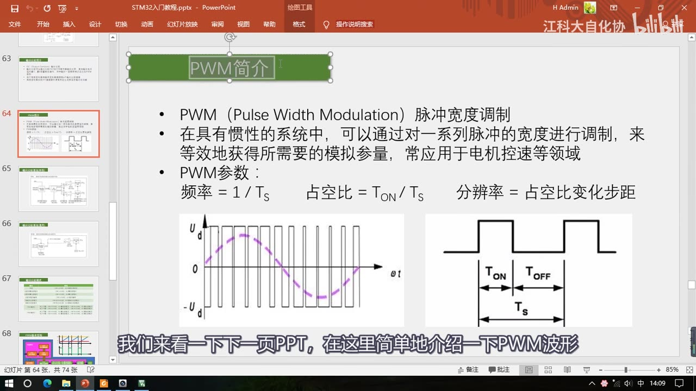
图 5：PPT「PWM简介」——PWM（Pulse Width Modulation）脉冲宽度调制；在惯性系统中调制脉冲宽度等效获得模拟参量；PWM 参数：频率 = 1/T_S、占空比 = T_ON/T_S、分辨率 = 占空比变化步距；左下是「脉冲 → 等效模拟量」波形（u_d 与紫色虚线），右下是 T_ON/T_OFF/T_S 的定义图
3.3 用 PWM 就能在数字系统里「输出模拟量」
- 小结（11:41）：使用 PWM 波形，就可以在数字系统等效输出模拟量，就能实现 LED 控制亮度、电机控速等功能。
- 这也回答了片头的问题：数字输出端口只有高低电平，但靠「足够快的通断 + 惯性系统」，就能表现出连续变化的亮度/速度。
4. 通用定时器的输出比较通道电路（图125）
接下来进入本节的正题：定时器的输出比较模块是怎么输出 PWM 波形的。视频先看高级定时器前三个通道的输出比较部分，再看通用定时器的（图125），两者的区别在第 8 章。
4.1 信号通路：从比较结果到引脚
按图125（捕获/比较通道的输出部分（通道1））从左往右：
- 左边是 CNT 与 CCR1 比较的结果：
CNT > CCR1和CNT = CCR1两路信号（还有隐含的小于）送给输出模式控制器； - 输出模式控制器（由寄存器位
OC1M[2:0]配置，属于TIMx_CCMR1）：它会改变输出OC1REF的高低电平。**REF 就是 reference（参考信号）**的缩写——「这个稍微记一下，之后还会见到」； OC1REF有两个去向：- 往上：可以映射到主模式控制器的
TRGO输出上去（TRGO可以触发别的定时器/DAC/ADC）； - 往下（主要去向）：进入极性选择电路——寄存器位
CC1P（在TIMx_CCER里）：写 0 信号直通，写 1 信号通过一个非门取反；
- 往上：可以映射到主模式控制器的
- 然后是输出使能电路（寄存器位
CC1E，也在TIMx_CCER），选择要不要输出； - 最后是
OC1引脚，这个引脚就是 CH1 通道的引脚，具体对应哪个 GPIO 口，查引脚定义表就知道了。
- 图里上方那个
ETRF输入是定时器的一个小功能，一般不用、不需要了解。 - 下面还有三个同样的单元，分别输出到 CH2、CH3、CH4。
4.2 这条通路上要记的寄存器位
| 位置 | 位名 | 所在寄存器（画面） | 作用 |
|---|---|---|---|
| 输出模式控制器 | OC1M[2:0] |
TIMx_CCMR1 |
选 8 种输出模式中的一种，决定 REF 怎么变 |
| 极性选择 | CC1P |
TIMx_CCER |
写 0 不反相、写 1 过非门取反 |
| 输出使能 | CC1E |
TIMx_CCER |
决定这个通道要不要输出到引脚 |
| 主模式映射 | —（REF→TRGO） | 主模式控制 | REF 可以映射成 TRGO 去触发别的外设 |
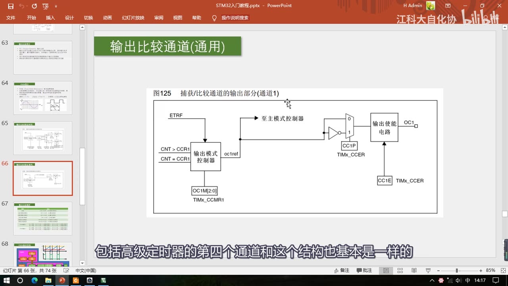
图 6：图125「捕获/比较通道的输出部分（通道1）」——左边 CNT > CCR1 / CNT = CCR1 进「输出模式控制器」（OC1M[2:0]，TIMx_CCMR1），输出 oc1ref；向上「至主模式控制器」，向下经「极性选择」CC1P（TIMx_CCER，0 直通/1 过非门）→「输出使能电路」CC1E → OC1 引脚
5. 输出比较的 8 种模式
5.1 模式总表
输出模式控制器具体怎么工作——什么时候给 REF 高电平、什么时候给低电平——由下面这张表的 8 种模式决定；模式可以通过寄存器配置，需要哪个就选哪个。
| 模式 | 描述（画面原文） | 怎么理解 |
|---|---|---|
| 冻结 | CNT=CCR 时，REF 保持为原状态 |
等于CNT、CCR 根本没用：不管谁大谁小，REF 保持上一个状态 |
| 匹配时置有效电平 | CNT=CCR 时，REF 置有效电平 |
相等那一刻把 REF 置有效（≈高） |
| 匹配时置无效电平 | CNT=CCR 时，REF 置无效电平 |
相等那一刻把 REF 置无效（≈低） |
| 匹配时电平翻转 | CNT=CCR 时，REF 电平翻转 |
每匹配一次翻转一次 |
| 强制为无效电平 | CNT 与 CCR 无效，REF 强制为无效电平 |
不看 CNT/CCR，直接强制成无效（≈低） |
| 强制为有效电平 | CNT 与 CCR 无效，REF 强制为有效电平 |
不看 CNT/CCR，直接强制成有效（≈高） |
| PWM模式1 | 向上计数：CNT<CCR 时，REF 置有效电平，CNT≥CCR 时，REF 置无效电平向下计数： CNT>CCR 时，REF 置无效电平，CNT≤CCR 时，REF 置有效电平 |
最常用：向上计数时「小于 CCR 为高、大于等于 CCR 为低」 |
| PWM模式2 | 向上计数：CNT<CCR 时，REF 置无效电平，CNT≥CCR 时，REF 置有效电平向下计数： CNT>CCR 时，REF 置有效电平，CNT≤CCR 时，REF 置无效电平 |
大小比较关系和 PWM1 一样，只是高低反过来 = PWM1 取反 |
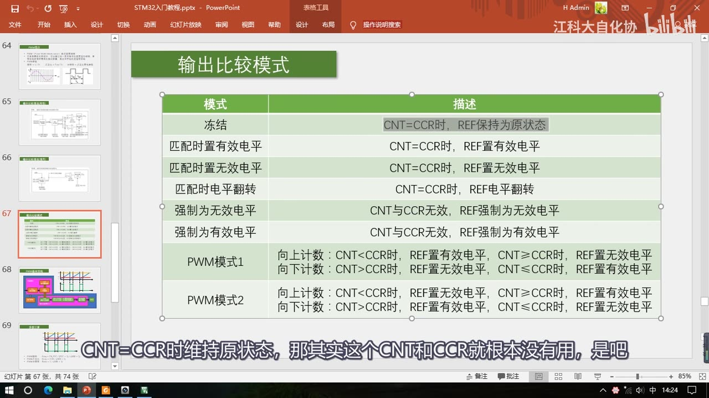
图 7：PPT「输出比较模式」8 种模式全表——冻结 / 匹配时置有效电平 / 匹配时置无效电平 / 匹配时电平翻转 / 强制为无效电平 / 强制为有效电平 / PWM模式1 / PWM模式2，右列是「描述」原文（CNT 与 CCR 的比较关系及 REF 的取值）
5.2 逐个看：哪些有实际用途
- ① 冻结：
CNT=CCR 时维持原状态，其实 CNT 和 CCR 就根本没有用，也可以理解成「CNT 和 CCR 无效，REF 保持原状态」。它不管 CNT 谁大谁小，直接 REF 保持不变。用处：切换为冻结模式后，输出就暂停了，并且高低电平也维持为暂停时刻的状态（比如正好在输出 PWM 时想停一下，就切到这个模式）。 - ②③④ 匹配时置有效 / 置无效 / 电平翻转：这三个模式都是当 CNT 与 CCR 值相等时执行操作。
- 先说个前提：「有效电平」和「无效电平」一般是高级定时器里的说法，在这里为了理解方便，你可以直接认为「置有效电平就是置高电平、置无效电平就是置低电平」。
- 匹配时电平翻转：
CNT=CCR时输出电平翻转一次，每更新两次输出才为一个周期；所以高电平和低电平的时间始终相等，占空比始终为 50%；输出波形的频率 = 更新频率 / 2（更新两次才为一个周期）。改变定时器更新频率，输出波形频率也随之改变。这是这三个里唯一比较像「波形输出」的模式。 - 匹配时置有效 / 置无效：上面这两个「相等时置高/置低」，感觉用途并不是很大——它们不适合输出连续变化的波形；如果想定时输出一个一次性的信号，那可以考虑一下这两个模式。
- ⑤⑥ 强制为无效 / 强制为有效电平：这两个模式和冻结模式也差不多（CNT/CCR 无效、REF 被强制），可用于紧急急停/强制输出。
- ⑦⑧ PWM模式1 / PWM模式2：这俩模式非常重要，因为它们可以用于输出频率和占空比都可调的 PWM 波形，也是我们主要使用的模式。
- PWM模式1（向上计数）：
CNT<CCR时 REF 置有效电平，CNT≥CCR时 REF 置无效电平； - PWM模式1（向下计数）：
CNT>CCR时 REF 置无效电平，CNT≤CCR时 REF 置有效电平——情况比较多，一般我们都只使用向上计数，所以向下计数的描述暂时不看； - PWM模式2：仔细对比会发现它的大小比较关系和 PWM模式1 这一套是一样的，区别就是输出的高低电平反过来了——所以 PWM模式2 实际上就是 PWM模式1 输出的取反。
- PWM模式1（向上计数）：
- 另外，REF 输出之后还有一个极性配置（
CC1P，第 4 章那张图）：输出模式里可以设置极性，最终输出之前也可以设置极性，设计得比较灵活——所以 PWM1 和 PWM2 其实可以互相等效，没必要两个都用。
5.3 结论：实际只用 PWM模式1 + 向上计数
- 「所以使用的话，我们可以只使用 PWM模式1，并且是向上计数，这一种模式就行了。」——这就是本集最重要的结论之一，后面所有分析（第 6、7 章）都以这个模式为例。
6. PWM 基本结构：本节重点图
6.1 结构组成
20:24 起给出 「输出 PWM 的基本结构」，老师说这也是本节课的重点内容：
- 左上角是时基单元和运行控制部分；再左边是时钟源选择，图里省略了——这些都是上一小节（[6-1]/[6-2]）的内容，在这里还需要继续使用。
- 不一样的地方：「这里更新事件的中断我们不需要了」——输出 PWM 暂时还不需要中断（时基单元照常运行，只是不用产生更新中断）。
- 时基单元里有
PSC预分频器、CNT计数器、ARR自动重装器；配置好时基单元，CNT 就可以开始不断地自增运行。 - 下面就是输出比较单元，总共有 4 路：输出比较单元最开始的，是 CCR 捕获/比较寄存器（CCR 是我们自己设定的，CNT 不断自增运行，同时它俩还在不断进行比较）；后面这个就是输出模式控制器，这里以 PWM模式1 为例讲解它的执行逻辑（图里直接写了两行：
CNT<CCR 时，REF 置有效电平、CNT≥CCR 时，REF 置无效电平）。 - REF 再经过极性选择、输出使能，最终通向 GPIO 口。
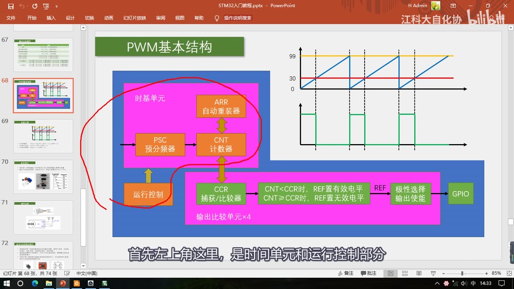
图 8：PPT「PWM基本结构」（本节重点图）——左：时基单元（PSC 预分频器 / CNT 计数器 / ARR 自动重装器）+ 运行控制；下：输出比较单元×4（CCR 捕获/比较器 → 输出模式控制器：CNT<CCR 时 REF 置有效电平、CNT≥CCR 时 REF 置无效电平）→ REF → 极性选择 输出使能 → GPIO；右上波形：蓝线 CNT 从 0 爬到 99、黄线 ARR=99、红线 CCR=30，下方绿线是输出
6.2 波形图怎么读：CNT、ARR、CCR 三条线
- 看右上角的波形图：蓝色线是 CNT 的值，黄色线是 ARR 的值。蓝线从 0 开始自增，一直增到 ARR（99），之后清零继续自增——这就是计数器的溢出更新周期。
- 在这个过程里再画一条红色线，这条红色线就是 CCR，比如设置 CCR = 30。
- 于是：CNT 从 0 开始往上加，只要 CNT < CCR，REF 就置有效电平（绿线是高）；之后 CNT ≥ CCR 了，就变为低电平；计数器清零后重新开始，又是 CNT < CCR 置高、CNT ≥ CCR 置低——这样一直持续下去，REF 的电平就会不断变化。
- 占空比受 CCR 值的调控：CCR 设置高一些，输出的占空比就变大；CCR 设置低一些，输出的占空比就变小。
- 这里 REF 就是一个频率可调、占空比也可调的 PWM 波形，最终再经过极性选择、输出使能，通向 GPIO 口，完成 PWM 波形的输出。
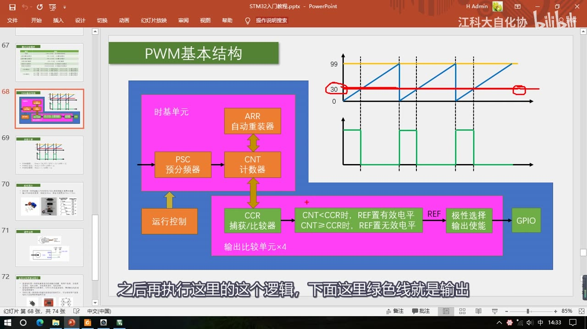
图 9：同一张 PWM 基本结构图，红圈标出 CCR 的红色阈值线（左端标 30，红圈正好压在数字上）——CCR 线抬高占空比变大、压低占空比变小；CNT 在 0～99 之间循环，越过红线的部分输出低电平
7. PWM 的三个参数怎么算
7.1 PWM 频率 = 计数器更新频率
- 看波形图：从这里到这里为 PWM 的一个周期，可以看出它始终对应着计数器的一个溢出更新周期——所以PWM 的频率就等于计数器的更新频率。
- 于是直接套用 [6-1] 的计数器更新频率公式：
PWM 频率 Freq = CK_PSC / (PSC + 1) / (ARR + 1)
PWM 占空比 Duty = CCR / (ARR + 1)
PWM 分辨率 Reso = 1 / (ARR + 1)
7.2 占空比 = CCR / (ARR + 1)：高电平其实只有 CCR 个数
- 再看占空比：CNT 是从 0 一直加到 ARR，比如 ARR = 99，那 CNT 总共就是计了 100 个数（0～99）。
- 那高电平的时间呢？CNT 是从 0 一直加到 CCR，比如 CCR = 30；注意这里在等于 30 的瞬间，就已经跳变为低电平了——所以 CNT 从 0 到 29 是高电平，总共是 30 个数的时间（不是 31 个）。
- 所以占空比 = 30 / 100 = 30%；总结成公式就是
占空比 = CCR / (ARR + 1)。 - CCR 一般取 0 ～ ARR：
CCR = ARR + 1时占空比正好是 100%；如果 CCR 再大一些，那占空比就始终是 100%，没有意义了。
7.3 分辨率 = 1 / (ARR + 1)：越小越好
- 分辨率就是占空比变化的步距：CCR 的变化范围取决于 ARR 的值——ARR 越大，CCR 的范围就越大，对应的分辨率就越高（步距越小）。
- 总结公式：
分辨率 = 1 / (ARR + 1)。 - 注意：这里作者定义的「分辨率」是「占空比最小的变化步距」，所以这个值是越小越好；你也可以把 CCR 的范围定义成分辨率，那就是值越大越好。总之就是占空比变化得越细腻越好。
7.4 视频留的练习题（下一集实操）
- 「如果我要求你输出一个频率为 1kHz、占空比可任意调节、且分辨率为 1% 的 PWM 波形，那你会不会用这里的公式，来确定合适的参数呢？」
- 「大家可以先想一想，我们下一小节就会来实际操作一下的。」——这道题的参数计算与代码都在 P16 [6-4]，本集只给公式。
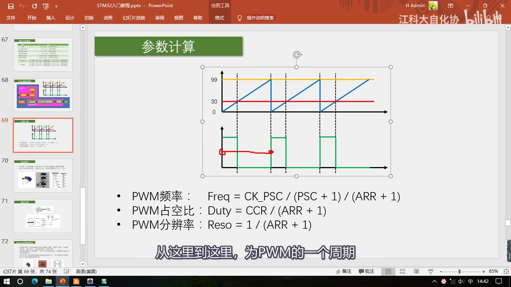
图 10：PPT「参数计算」——波形图上是 CNT(蓝)/ARR=99(黄)/CCR=30(红) 与输出（绿），下面三行公式：PWM频率：Freq = CK_PSC / (PSC + 1) / (ARR + 1)、PWM占空比：Duty = CCR / (ARR + 1)、PWM分辨率：Reso = 1 / (ARR + 1)
8. 高级定时器的输出比较通道（仅作了解）
25:45 起回过头看高级定时器的输出比较电路（图78：捕获/比较通道的输出部分（通道1至3）），老师明确说**「这个电路大家仅作了解即可，不需要掌握」**。
8.1 多出来的部分：死区发生器与互补输出
- 对比第 4 章的通用定时器图（图125），高级定时器多出的是死区发生器和两路互补输出：
- 输出模式控制器出来的
OC1REF，先经过死区发生器（DTG[7:0]，在TIM1_BDTR寄存器），得到OC1_DT和OC1N_DT两路； - 两路各自经过极性选择（
CC1P/CC1NP）和输出使能（CC1E/CC1NE），分别输出OC1和OC1N两个互补的引脚； - 图里还有
MOE、OSSR、OSSI等位（在TIM1_BDTR里）——这些是刹车/输出使能相关的控制位，本集没有展开。
- 输出模式控制器出来的
- 高级定时器的第四个通道和通用定时器的结构基本一样（没有死区/互补那一套），因为三相无刷电机只需要三路互补。
8.2 为什么要死区：先看外电路（推挽）
- 圈出来的电路有什么用，需要和外电路一起理解：它外面通常接一个推挽电路：
- 上面是正极，接着一个大功率开关管（一般都是 MOS 管，就是一种大功率电子开关），再来一个 MOS 管；
- 下面也是一样，有一个控制极，高电平导通、低电平断开。
- 推挽的四种状态：
- 上管导通、下管断开 → 输出高电平；
- 上管断开、下管导通 → 输出低电平；
- 上下管都导通 → 电源短路，这样是不允许的；
- 上下管都断开 → 输出高阻态。
- 两个这样的推挽电路就构成 H 桥电路，可以控制直流电机正反转（第 11 章讲直流电机时还会用到这个结构）。
8.3 死区生成：延时一小段再导通
- 对这样的电路，如果直接用单片机来控制，就需要两个控制极，并且这两个控制极的电平是相反的（互补）——因为上管导通，下管就必须断开；下管导通，上管就必须断开。
- 那为什么还要死区？在切换上下管导通状态时，如果在上管关断的瞬间下管立刻打开，会由于器件的不理想，出现短暂的上下管同时导通的现象——这会导致功率损耗，引起器件发热。
- 所以为了避免这个问题，就有了死区生成电路：它会在上管关闭的时候，延迟一小段时间，再导通下管；下管关闭的时候，延时一小段时间，再导通上管——这样就可以避免上下管同时导通的现象了。
- 这就是死区生成和互补输出的用途，老师强调「我就讲这么多，大家了解一下即可」。
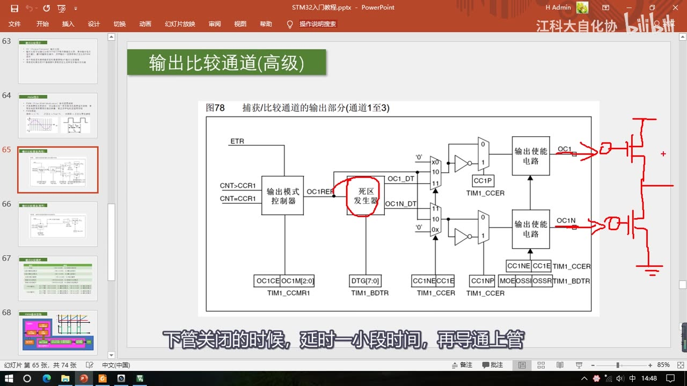
图 11：图78「捕获/比较通道的输出部分（通道1至3）」——红圈圈出「死区发生器」（DTG[7:0]，TIM1_BDTR），输出 OC1_DT/OC1N_DT 两路经极性（CC1P/CC1NP）与输出使能（CC1E/CC1NE）得到互补的 OC1/OC1N；右侧红笔画的推挽外电路：上管接电源正极（+）、下管接地，中间输出
9. 舵机
到这里「STM32 内部如何产生 PWM 波形」就讲完了，接下来看外部设备：舵机和直流电机——都可以用 PWM 来控制。
9.1 舵机是什么：内部闭环的小电机系统
- 「舵机是一种根据输入 PWM 信号占空比来控制输出角度的装置。」
- 套件里的舵机型号是 SG90，有三根输入线：两根是电源线、一根是信号线，我们的 PWM 就是输入到信号线来控制舵机的。
- 舵机有一个白色的输出轴，它的轴会固定在一个指定的角度不动——固定在哪个位置，是由信号线的 PWM 信号决定的。
- 中间的拆解图可以看到内部结构：舵机上盖、输出轴、减速齿轮组、直流电机、舵机控制板、电位器。由此可知：舵机并不是一种单独的电机，它的内部是由直流电机驱动的，里面还有一个控制电路板（电机的控制系统）。
- 内部闭环的执行逻辑（29:52）：
- PWM 信号输入到控制板，给控制板一个指定的目标角度；
- 电位器检测输出轴的当前角度；
- 如果大于目标角度，电机就会反转；
- 最终使输出轴固定在指定角度。
- 但不管内部怎么闭环，我们只需要知道：输入一个 PWM 波形，输出轴就固定在一个角度就行了。
9.2 输入要求：周期 20ms、高电平 0.5ms～2.5ms
- 输入 PWM 信号的要求（画面第二行原文）：周期为 20ms（对应 50Hz），高电平宽度为 0.5ms～2.5ms（也就是占空比在这个范围内变化）。
- 角度约定：这是一个 180° 的舵机，输出轴的角度是 -90° 到 +90°（或者规定成 0 到 180° 也是没问题的）。
- 周期 20ms = 这个上升沿到下一个上升沿之间的时间是 20ms。
- 脉宽与角度是线性对应的（画面表，口述同步）：
| 输入信号脉冲宽度（周期 20ms） | 舵机输出轴转角（画面） | 口述 |
|---|---|---|
| 0.5ms | -90° | 0.5ms 对应 -90 度 |
| 1ms | -45° | 1ms 对应 -45 度 |
| 1.5ms | -0°（应为 0°，见「存疑」） | 1.5ms 对应 0 度 |
| 2ms | 45°（口述为 +45°） | 2ms 对应 +45 度 |
| 2.5ms | 90°（口述为 +90°） | 2.5ms 对应 +90 度 |
- 0.5ms 对应 -90°，2.5ms 对应 +90°，中间的对应关系都是线性分配的、按比例来；你给个 PWM，输出轴就会固定在一个角度。
9.3 应用：PWM 在这里是「通信协议」
- 应用：遥控车、遥控船，可以用舵机来控制方向；还有一些其他的机械结构，都可以考虑用舵机。
- 特别强调：这里的 PWM 波形，其实是当做一个「通信协议」来使用的，跟前面说的「用 PWM 等效一个模拟输出」关系不大——把 PWM 当成一个通信协议，也是一个比较常见的应用，因为很多控制器都有 PWM 输出功能，而且 PWM 只需要一根信号线就行了。
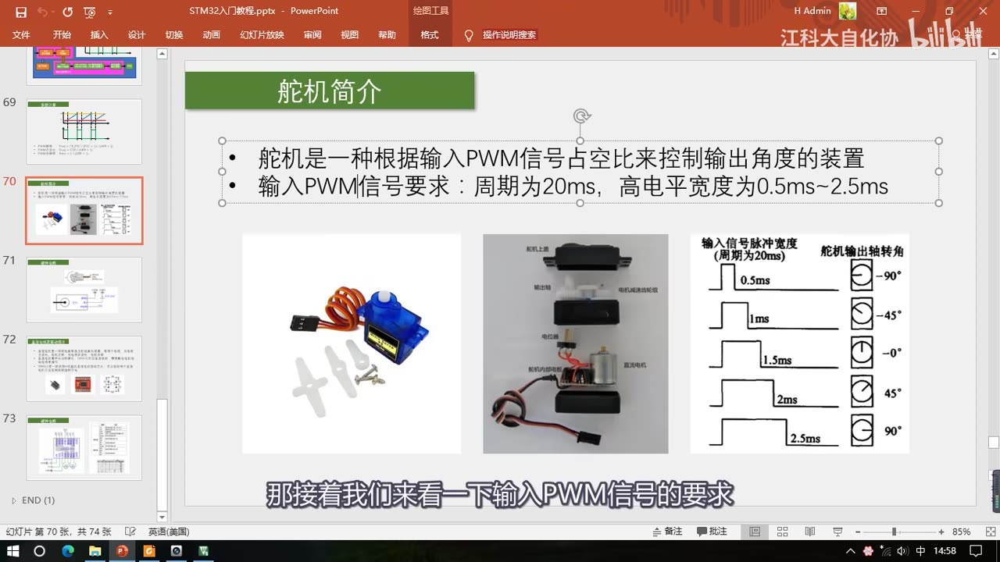
图 12：PPT「舵机简介」——舵机是根据输入 PWM 信号占空比控制输出角度的装置；输入 PWM 要求周期 20ms、高电平 0.5～2.5ms；下面三张图：SG90 舵机、舵机拆解（舵机上盖/输出轴/电机减速齿轮组/电位器/舵机控制板/直流电机）、脉宽-角度表（0.5ms→-90°、1ms→-45°、1.5ms→-0°、2ms→45°、2.5ms→90°）
10. 舵机的硬件电路
10.1 引脚与线色：黑/棕=负、红=正、黄/橙/白=信号
- 硬件电路比较简单，先看引脚定义图：舵机上有三根线，分别是黑、红、黄：
- 黑色是电源负极 GND；
- 红色是电源正极，5V 舵机就接 +5V；
- 黄色是信号线，接 PWM 信号。
- 不同厂家的线色可能不一样：套件里这个舵机是棕、红、橙，右边那个是黑、红、白——但引脚顺序是一样的（黑/棕 = 负，红 = 正，黄/橙/白 = 信号）。如果不确定，就到商品页面看引脚说明。
10.2 供电：5V 是电机驱动电源，独立供电要共地
- GND 就接 GND。
- 电源正的 5V 是「电机的驱动电源」：一般电机都是大功率设备，它的驱动电源也必须是一个大功率的输出设备——如果能像这样单独提供供电，那就再好不过了；如果不能，那也要注意电源的功率是不是能达标。
- 如果单独供电的话，供电的负极要和 STM32 共地，然后正极接在 5V 供电引脚上。
- 对这套套件：可以直接从 ST-Link 的 5V 输出脚引一根线接到这里，这样就是使用 USB 的 5V 供电，也是可以带得动的。
10.3 信号线：PWM 直接接 STM32 引脚（如 PA0）
- 信号线 PWM 就直接接到 STM32 引脚上就行了，比如 PA0。
- 为什么信号线可以随便接：因为这个舵机内部是有驱动电路的，所以单片机的引脚可以直接接到这里来；我们给的 PWM 只是一个通信线，是不需要大功率的。
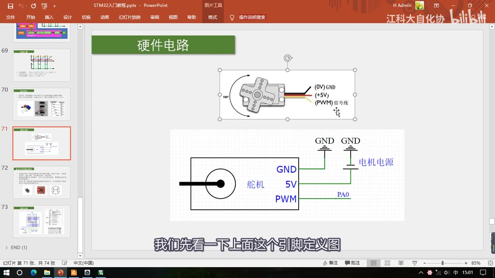
图 13：舵机硬件电路——上：引脚定义图（(0V) GND 黑、(+5V) 红、(PWM) 信号线 黄，标注 180°）；下：接线图（舵机的 GND→GND、5V→电机电源、PWM→PA0）
11. 直流电机与驱动芯片
11.1 直流电机：大功率器件，GPIO 不能直接驱动
- 「直流电机是一种将电能转换为机械能的装置」——通电就转。
- 它有两个电极：当电极正接时，电机正转；当电极反接时，电机反转；把正负极对调，电机就会朝另一个方向转。
- 套件里的电机型号是 130 直流电机。
- 「直流电机属于大功率器件，GPIO 口无法直接驱动，需要配合电机驱动电路来操作」——电机这类器件基本上都属于大功率设备，必须要加驱动电路才能控制。
- 和舵机的区别：舵机内部自带驱动电路，所以信号线可以直接接单片机；直流电机是一个单独的电机、里面没有驱动电路，所以要外挂一个驱动电路来控制。
11.2 常见驱动芯片与 TB6612
- 电机驱动电路也是一个研究课题，市面上的选择很多：TB6612、DRV8833、L9110、L298N 等等，这些都是比较常见的电机驱动芯片；另外还有一些用分立元件 MOS 管搭建的电路，功率可以做得更大一些。
- 本课程直接使用 TB6612 这款电机驱动芯片来驱动电机（拿来用就行）。
- 「TB6612 是一款双路 H 桥型的直流电机驱动芯片，可以驱动两个直流电机并且控制其转速和方向。」 芯片里面有两路驱动电路，可以独立地控制两个电机；又因为它是 H 桥型驱动电路，里面一路有四个开关管，所以就可以控制正反转。（有些芯片比如 ULN2003 里面一路就只有一个开关管，所以只能控制电机在一个方向转。）
11.3 H 桥结构：两路推挽控制正反
- 右边那个图是 H 桥电路的基本结构：它是由两路推挽电路组成的（第 8.2 章分析过推挽）。
- 左边这一路：上管导通、下管断开，那左边输出就接在 VM（电机电源正极）上；下管导通、上管断开，那就是接在 PGND（电源负极）。
- 如果有两路推挽电路，中间接一个电机：
- 左上和右下导通，电流就从左流向右；
- 右上和左下导通，电流方向就反过来了，从右流向左；
- H 桥可以控制电流流过的方向，所以它就能控制电机正反转。
- 这就是电机驱动芯片内部的部分电路——大概了解一下即可，应用的话不用管这么多。
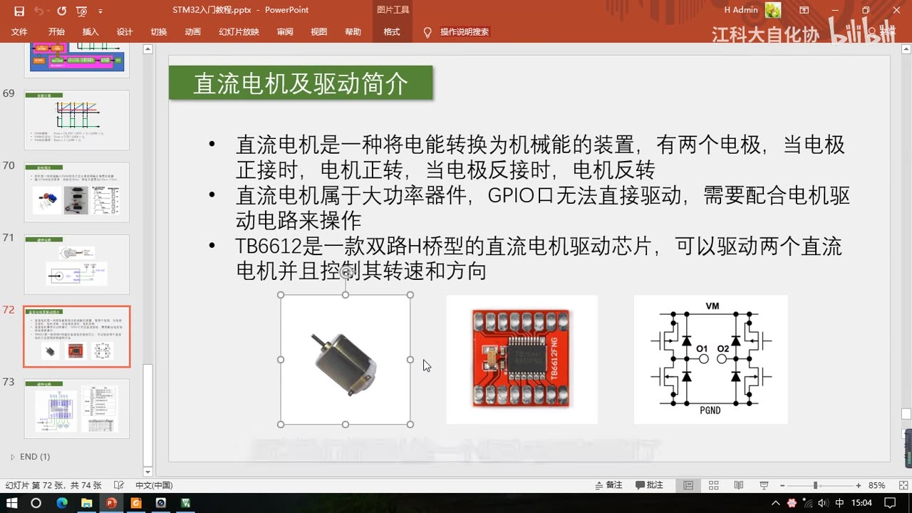
图 14：PPT「直流电机及驱动简介」——直流电机是电能转机械能的装置，两个电极正接正转、反接反转；属大功率器件，GPIO 口无法直接驱动，需配合电机驱动电路；TB6612 是双路 H 桥型驱动芯片；下图：130 直流电机实物、TB6612 驱动模块（TB6612FNG）、H 桥结构图（VM / O1 / O2 / PGND，四个开关管）
12. TB6612 的硬件电路与引脚
12.1 引脚定义表（画面原文）
| 引脚 | 定义（画面原文） |
|---|---|
| VM | 驱动电压输入端（4.5～10V） |
| VCC | 逻辑电平输入端（2.7～5.5V） |
| GND | 电源地端 |
| STBY | 正常工作/待机状态控制输入端 |
| PWMA | PWM 信号输入端 |
| AIN1 | 电机控制模式输入端 |
| AIN2 | 电机控制模式输入端 |
| AO1 | 电机驱动输出端 |
| AO2 | 电机驱动输出端 |
| PWMB | PWM 信号输入端 |
| BIN1 | 电机控制模式输入端 |
| BIN2 | 电机控制模式输入端 |
| BO1 | 电机驱动输出端 |
| BO2 | 电机驱动输出端 |
12.2 三个电源脚：VM、VCC、GND
- VM：左下角 VM 就是电机电源的正极，这个和刚才舵机的电源要求是一样的，要接一个可以输出大电流的电源。这个电压一般和你的电机额定电压保持一致——5V 的电机这里就接 5V，7.2V 的电机这里就接 7.2V。
- VCC：逻辑电平输入端，范围是 2.7 到 5.5V，这个要和我们控制器的电源保持一致——用 STM32（3.3V 器件）就接 3.3V，用 51 单片机（5V 器件）就接 5V。这个引脚并不需要大功率，所以可以和控制器共用一个电源。
- GND：接系统的负极就行了；板子右边还有两个 GND，这个都是一样的引脚，在板子内部都是连通的，随便选一个用就可以。
12.3 控制引脚：AIN1/AIN2/PWMA 与 STBY
- A 路控制三个脚：PWMA、AIN1、AIN2——这三个引脚直接接到单片机的 GPIO 口就行了：
- PWMA 引脚要接 PWM 信号输出端；
- 其它两个引脚可以任意接两个普通的 GPIO；
- 这三个引脚给一个低功率的控制信号，驱动电路就会从 VM 汲取电流，来输出到电机——这样就能完成「低功率的控制信号控制大功率设备」的目的。
- B 路完全一样：BO1、BO2 是 B 路的两个输出，控制端是 BIN1、BIN2、PWMB，两路的功能和操作方法是完全一样的（两路可以分别接两个电机）。
- STBY（StandBy）待机控制脚：接 GND，芯片就不工作、处于待机状态；接逻辑电源 VCC，芯片就正常工作；不需要待机模式的话，可以直接接 VCC（3.3V）。
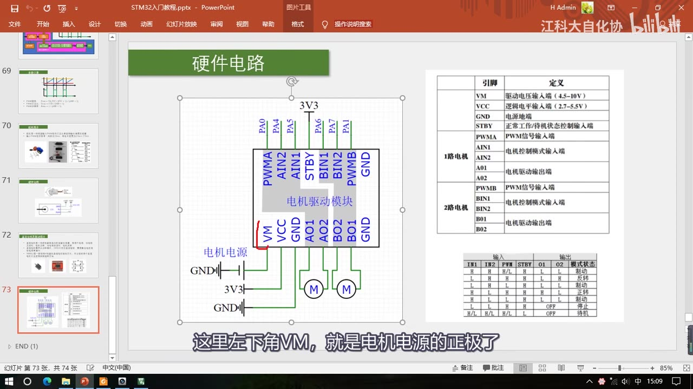
图 15：TB6612 硬件电路——左边接线图：模块上方一排 8 个脚（PWMA、AIN2、AIN1、STBY、BIN1、BIN2、PWMB、GND）接到 STM32 的 GPIO，画面上方引出的是 PA0/PA4/PA5/PA6/PA7/PA1；下方 VM 接电机电源（左侧标「电机电源」）、VCC 接 3V3、GND 接 GND，AO1/AO2 与 BO1/BO2 分别接两个电机；右边是引脚定义表（VM 驱动电压输入端 4.5～10V、VCC 逻辑电平 2.7～5.5V、GND、STBY、PWMA、AIN1/AIN2、AO1/AO2、PWMB、BIN1/BIN2、BO1/BO2）与真值表
13. 控制真值表与调速
13.1 真值表（画面原文）
这三个脚（IN1、IN2、PWM，再加 STBY）是如何控制电机正反转和速度的？看右下角的表：
| IN1 | IN2 | PWM | STBY | O1 | O2 | 模式状态 |
|---|---|---|---|---|---|---|
| H | H | H/L | H | L | L | 制动 |
| L | H | H | H | L | H | 反转 |
| L | H | L | H | L | L | 制动 |
| H | L | H | H | H | L | 正转 |
| H | L | L | H | L | L | 制动 |
| L | L | H | H | OFF | — | 停止 |
| H/L | H/L | H/L | L | OFF | — | 待机 |
- STBY 低电平就待机、高电平就正常工作，这个不用看（表里除了最后一行，STBY 都是 H）。
- IN1 和 IN2 全都接高电平：两个输出就都为低电平，两个输出没有电压差，电机是不会转的——模式状态是制动。
- IN1 和 IN2 全都接低电平：输出直接关闭，这样电机也是不会转的——模式状态是停止。全高或全低，电机都不能转。
- 剩下的就只有一高一低了：
- IN1 给低电平、IN2 给高电平 → 电机处于反转状态；转还是不转取决于 PWM——PWM 给高电平，输出就是一低一高、有电压差了，电机可以转（定义为反转）；PWM 给低电平，输出两个低电平，电机还是不转。这就是反转的逻辑。
- IN1 给高、IN2 给低 → 正转状态，同样 PWM 高就正转、PWM 低就停止。
13.2 调速：PWM 频率够快 = 连续稳定旋转
- 如果 PWM 是一个不断翻转的电平信号，那电机就是快速地「反转、停止、反转、停止」——如果 PWM 频率足够快，那电机就可以连续稳定地反转了，并且速度取决于 PWM 信号的占空比。
- 正转也一样：PWM 频率足够快，电机就是连续稳定地正转，并且速度取决于 PWM 信号的占空比。
- 老师强调：「在这里的 PWM，就是我们之前讲的、使用 PWM 来等效一个模拟量的功能了。」——也就是说：IN1/IN2 决定方向（把电流通路定下来），PWM 负责「以多快频率、多大比例通断」，从而等效出「加在电机上的平均电压」，占空比越大平均电压越高、转速越快。
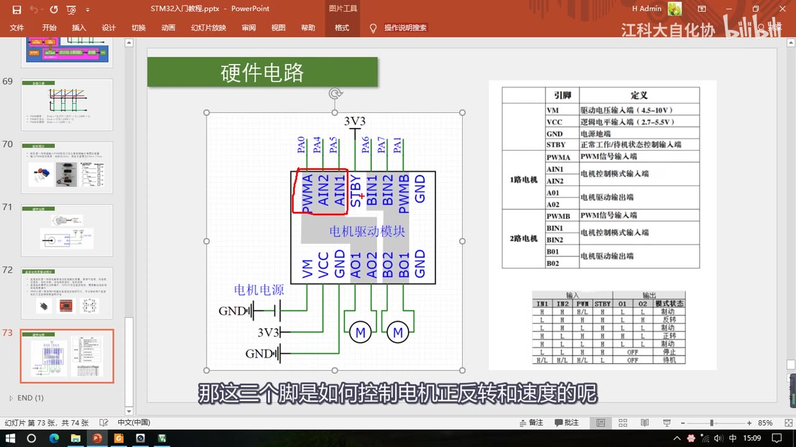
图 16：TB6612 硬件电路页（红圈标出 PWMA/AIN2/AIN1 三个控制脚）——右下角控制真值表：输入 IN1/IN2/PWM/STBY，输出 O1/O2 与模式状态（H H H/L H→L L 制动；L H H H→L H 反转；L H L H→L L 制动；H L H H→H L 正转；H L L H→L L 制动；L L H H→OFF 停止；H/L H/L H/L L→OFF 待机）
14. 参考手册导读与下一集
- 本小节涉及的参考手册章节（43:01 起）：
- 捕获/比较通道（里面有捕获/比较单元的一些电路图）；
- 14.3.7 强置输出模式（手册原文；口述常说「强制输出模式」）；
- 14.3.8 输出比较模式——就是「CNT=CCR 时 REF 是冻结、置高、置低还是翻转」的那四种模式；
- 14.3.9 PWM 模式——「这个比较重要」；
- 14.4 节里的
TIMx_SMCR（从模式控制寄存器）——画面停在「14.4 TIMx 寄存器描述」书签与TIMx_SMCR的TS[2:0]（触发选择）/SMS[2:0]（从模式选择）说明页（44:11）。
- 看手册的方法：手册「可能它的语言会比较晦涩难懂」，而且「经常会像这样引用一大堆寄存器的名字」，所以看的时候要多对照寄存器介绍来理解——「把功能描述和寄存器描述都对照看看，这样才好懂一些」，而且「这些寄存器的解释也都是很重要的内容」。本集没有逐页细看手册（老师说自己基本内容都讲过了，就不再带大家细看）。
- 片尾（44:16）：「好，那本小节到这单就结束了，我们下一小节再来学习一下 PWM 的代码部分。」——代码在 P16 [6-4]；预计下一集就是把这些内容写成代码——片头三个程序（呼吸灯/舵机/直流电机），以及实际算一遍第 7.4 节那道 1kHz/1%/占空比可调的参数题（待 P16 采集时核对）。
坑与易错点
- 本集没有代码：不要在本集找
TIM_OCInit、TIM_OCMode_PWM1、TIM_SetCompare1的用法——这些全在 P16 [6-4]；片头三个工程是现成的，只是演示现象。 - 占空比是
CCR/(ARR+1)，不是CCR/ARR：分母是ARR+1（CNT 从 0 数到 ARR 共 ARR+1 个数）。ARR=99 时一个周期是 100 个数。 - 高电平只有 CCR 个数、不是 CCR+1 个：CNT 等于 CCR 的瞬间就已经跳变为低电平，所以 CCR=30、ARR=99 时高电平是 CNT 取 0～29 共 30 个数，占空比 30/100=30%。
分辨率 = 1/(ARR+1)是「步距」，越小越好：这里是本书的定义（占空比最小变化步距）；如果按「CCR 范围」来定义分辨率，那就是越大越好——两种说法别打架。- CCR 一般取 0～ARR：
CCR = ARR+1时占空比正好 100%，再大就没意义了（恒为 100%）。 - PWM模式2 = PWM模式1 输出取反：两者大小比较关系一样，只是高低电平反过来；实际只用 PWM模式1 + 向上计数就行，不用纠结模式2。
- 「有效电平/无效电平」在这里就当高/低电平：这是高级定时器的说法，本课程为了方便理解直接当高/低；真正的电平还可以被
CC1P极性位反一次。 - 8 种模式里大部分是「不是用来输出连续波形」的：冻结（输出暂停、保持原状态）、匹配时置有效/置无效（适合一次性信号）、强制无效/有效（急停/强制输出）、匹配时电平翻转（占空比恒 50%，输出频率 = 更新频率/2）——只有 PWM1/PWM2 能同时调频率和占空比。
- 基本定时器没有输出比较：TIM6/TIM7 不能用这个功能；4 个通道各有各的 CCR、但共用一个 CNT。
- PWM 只能用在「惯性系统」：LED（余晖+视觉暂留）、电机（转动惯性）可以，别指望用它控制一个没有惯性的东西。频率要够快（一般几 K～几十 KHz），否则会看到闪烁/抖动。
- 高级定时器的死区/互补只是为了驱动推挽/H 桥：上下管同时导通 = 电源短路，死区就是在切换时延时一下避免同时导通；这部分本集只要求了解。
- 舵机的 PWM 是「通信协议」不是「等效模拟量」：周期必须 20ms（50Hz），高电平 0.5～2.5ms 对应 -90°～+90°（线性）；给错周期/脉宽，舵机要么不动要么乱转。
- 舵机三根线颜色不能记死：黑/棕是负、红是正、黄/橙/白是信号，顺序一致；不确定就查商品页。电机电源是大功率的，独立供电时负极一定要和 STM32 共地。
- 直流电机 GPIO 不能直接驱动：必须加驱动电路（TB6612/DRV8833/L9110/L298N 或分立 MOS）；PWMA 必须接 PWM 输出端，AIN1/AIN2 可以接普通 GPIO。
- TB6612 的 VM 和 VCC 别接反：VM 是电机电源（4.5～10V，接电机额定电压、要大电流），VCC 是逻辑电源（2.7～5.5V，和控制器一致）；STBY 接 GND 会待机、芯片不工作，不需要待机就接 VCC。
- 真值表要记两条就够：IN1=IN2 全高 = 制动（两输出都低、无压差）、全低 = 停止（输出关闭）；一高一低才可能转，且 PWM 高才转、低就停——方向由谁高谁低决定。